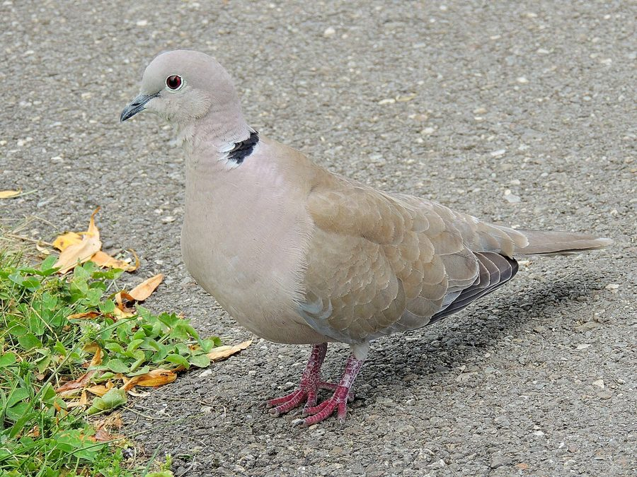

धवल पंडुकEurasian Collared Dove
Streptopelia decaocto · Columbidae · BRD-0026

- Scientific name
- Streptopelia decaocto (Frivaldszky, 1838)
- Family
- Columbidae
- Hindi
- धवल पंडुक
- Status here
- native
- IUCN
- LC
When to look कब देखें
Present all year.
धवल पंडुक / Eurasian Collared Dove
Streptopelia decaocto (Frivaldszky, 1838) — Columbidae
धवल पंडुक (यूरेशियन कॉलर्ड डव) — पूर्वी उत्तर प्रदेश के खेतों, बागों और इंसानी बस्तियों के आसपास पाया जाने वाला एक आम और शांत स्वभाव का निवासी पक्षी है। यह हल्के धूसर-रेतीले रंग का होता है और इसकी सबसे बड़ी पहचान इसकी गर्दन के पीछे बनी एक साफ़, बारीक काली अर्ध-पट्टी (black half-collar) है। यह मध्यम आकार का पक्षी कबूतर से थोड़ा छोटा होता है। सुबह के समय इसकी गूंजने वाली तीन-खंडों की पुकार (distinctive three-syllable call) "कू-कू-कूक" गाँव की शांति में गूंजती है। हाल के दशकों में इस पक्षी ने दुनिया भर में अपनी सीमा का असाधारण विस्तार किया है। यह ज़मीन पर गिरे हुए अनाज और घास के बीजों को खाना पसंद करता है।
Quick Identification त्वरित पहचान
| Feature | Description |
|---|---|
| Size | Medium-sized dove (30–33 cm total length); larger and stockier than Laughing Dove |
| Colouration | Pale sandy-grey plumage with a pinkish tint on head and breast; belly greyish-white |
| Neck Mark | A neat, narrow black half-collar with white edges on the back of the neck |
| Tail | Under-tail is white-tipped; outer tail feathers have broad white edges visible in flight |
| Eyes | Red or reddish-brown irises, bordered by a narrow white ring of bare skin |
| Call | Characteristic rhythmic three-syllable coo: coo-coo-coo (emphasis on second syllable) |
Field tip: Look on overhead wires, dry branches, or television antennas in villages. Their sandy-grey color and neat black neck-collar distinguish them instantly from pigeons and smaller doves.
Morphology आकारिकी
Biometrics (typical measurements in the northern Indian plains):
| Measurement | Range |
|---|---|
| Total length | 300–330 mm |
| Wing (flattened chord) | 165–180 mm |
| Tail | 125–140 mm |
| Tarsus | 21–24 mm |
| Bill (culmen from base) | 16–18 mm |
| Weight | 140–200 g |
Plumage: The body is primarily pale sandy-grey, showing a warm buff-pink flush on the crown, neck, and breast. The upper mantle, back, and rump are a uniform light greyish-brown. The outer wings are dark brown, contrasting with the paler grey body. The nape features a narrow black half-collar outlined in narrow white borders. The central tail feathers are greyish-brown, while the outer ones are dark grey with prominent white tips.
Bare parts: The bill is short, slender, and black. The irises are bright ruby-red. The legs and feet are purplish-red.
Vocalisations
Eurasian Collared Doves call actively throughout the day.
- Advertising Song: A rolling, rhythmic, three-syllable coo: coo-COO-coo, repeated several times, often with a slight emphasis on the middle note.
- Flight/Alarm Call: A loud, nasal, screeching gwerri or krieh, produced when taking flight during territorial displays or when startled by predators.
Ecological Role पारिस्थितिक भूमिका
Terrestrial seed eater.
- Granivore: They feed heavily on agricultural residue, picking up grains left behind after harvest.
- Ecological competitor: They compete with other columbids like Rock Pigeons (Columba livia) and Laughing Doves (Spilopelia senegalensis) for fallen grain in threshing areas.
- Raptor prey: They serve as a key food resource for birds of prey like the Shikra.
Life Cycle / Phenology जीवन चक्र
- Breeding season: Breeding occurs year-round, with peak nesting from March to September.
- Nesting: They build their nests in orchard trees (mango, guava), dry hedges, or on structural beams of rural houses.
- Nest structure: A loose, flat platform of thin twigs and dry grass stalks.
- Clutch size: 2 smooth, glossy white, oval eggs.
- Incubation: 14–17 days, shared by both parents.
- Fledging: Nestlings are fed crop milk initially, transitioning to seeds. They fledge and leave the nest in 15–20 days, often raising up to 3–4 broods a year.
Host Plants or Prey आहार
Primary food items:
- Agricultural Grains: Wheat (Triticum aestivum), rice, maize, and lentils.
- Seeds: Seeds of grasses like Cynodon dactylon (Doob) and weeds.
- Leaves/Buds: Occasional feeding on young green shoots and weed buds.
Predators / Natural Enemies शत्रु
- Raptors: Shikra (Accipiter badius) is a common predator.
- Crows: House Crow (Corvus splendens) and Jungle Crow (Corvus macrorhynchos) steal eggs from nests.
- Reptiles: Rat Snake (Ptyas mucosa) and tree snakes search for nests.
Agricultural / Human Relevance कृषि प्रासंगिकता
Harvest consumer. They are regular visitors to post-harvest grain drying yards. They consume loose grain but do not damage standing crops, thus their economic impact is minor.
Their tolerance of human presence makes them common around village settlements, where they are viewed as gentle birds.
Expected Locally स्थानीय रूप से अपेक्षित
Not a field record. Written from published accounts for eastern Uttar Pradesh. No confirmed local sighting yet — if you have seen it, that is what the atlas needs.
अभी तक स्थानीय पुष्टि नहीं। यह विवरण प्रकाशित स्रोतों से है, किसी अवलोकन से नहीं।
A very common resident throughout Basti district. They are often seen perched in pairs on telephone lines running along agricultural field boundaries. They are frequent visitors to rural courtyards (aangan) to pick up spilled grain. Their nesting is common in local mango (Mangifera indica) orchards.
Distribution वितरण
Global range: Widespread native of Southern and Western Asia; introduced to Europe and North America where it has colonized vast territories.
In India: Widespread throughout the plains and low hills.
In Uttar Pradesh: Common resident across all agricultural plains and suburban areas.
In Basti district / eastern UP: Found in high numbers across all villages and towns.
Research Questions शोध प्रश्न
Anyone can investigate these | कोई भी इन प्रश्नों की जाँच कर सकता है
- How has the population density of Eurasian Collared Doves changed in your village over the last decade? — Interview local elders to reconstruct population trends.
- What is the preference of nesting trees (e.g., Mango vs. Babool) during the peak hot season? — Survey and catalog nest tree species.
- How many times does a pair raise successful broods in a single calendar year in Basti? — Track a breeding pair's nesting cycles.
- Does the presence of black collars change in intensity during the breeding season? / क्या प्रजनन काल के दौरान इस पंडुक की काली पट्टी का रंग अधिक गहरा हो जाता है? — Monitor feather variations in local populations.
- How do Eurasian Collared Doves interact with House Crows nesting in the same tree? / एक ही पेड़ में घोंसला बनाने वाले यूरेशियन कॉलर वाले कबूतरों का जंगली या घरेलू कौवों के साथ कैसा व्यवहार होता है? — Document nesting conflicts and nest defense behaviors.
Similar Species मिलती-जुलती प्रजातियाँ
| Species | Key Difference | हिंदी |
|---|---|---|
| Spilopelia senegalensis (Laughing Dove) | Smaller; slender; reddish-brown; lacks neck collar; has a chequered collar on throat; laughing call | छोटी पंडुक — बहुत छोटी, भूरी और कंठ पर चित्तीदार धब्बा |
| Spilopelia chinensis (Spotted Dove) | Darker; back spotted; broad black collar with white spots on the back of neck | चित्तीदार पंडुक — काली गर्दन पर सफेद डॉट्स |
| Columba livia (Rock Pigeon) | Much larger; stocky; blue-grey plumage; lacks neck collar | कबूतर — बड़ा और गहरे भूरे-नीले रंग का |
Field rule: Sandy-grey body, neat black half-collar on the back of the neck, bright red eyes, and a three-syllable coo-COO-coo call.
Taxonomy & Classification वर्गीकरण
Original description. Emerich Frivaldszky described the Eurasian Collared Dove as Columba decaocto in 1838 in the Közleményei de la Société Scientifique de Hongrie (Vol. 3, p. 183). The type locality was Turkey. The genus name Streptopelia was established by Bonaparte in 1855, combining the Greek streptos (collar/necklace) and peleia (dove). The specific name decaocto is Latin for "eighteen", referring to a Greek myth about a servant maid who was transformed into a dove because she complained about receiving only 18 pieces of copper.
Subspecies. Two subspecies are recognized. The subspecies present in UP is:
| Subspecies | Authority | Range | Notes |
|---|---|---|---|
| S. d. decaocto | (Frivaldszky, 1838) | Europe, Middle East, India, China | UP subspecies; nominate form; widespread and expanding |
Family and order placement. Placed in the order Columbiformes, family Columbidae.
Phylogenetic notes. Streptopelia decaocto is closely related to Streptopelia roseogrisea (African Collared Dove).
IUCN status rationale. Listed as Least Concern (LC) due to its extremely large geographic distribution, stable populations, and lack of conservation threats.
Photo Gallery फोटो गैलरी
References संदर्भ
- Frivaldszky, E. (1838). Balkáni gerle (Columba decaocto). Társasági Közlemények, 3, 183. [original description]
- Ali, S. & Ripley, S. D. (1999). Handbook of the Birds of India and Pakistan. Vol. 3. Oxford University Press, New Delhi.
- Grimmett, R., Inskipp, C. & Inskipp, T. (2011). Birds of the Indian Subcontinent. 2nd ed. Christopher Helm, London.
- Hengeveld, R. (1993). The Asiatic Collared Dove Streptopelia decaocto (Frivaldszky, 1838) in Europe and North America. Journal of Biogeography, 20(2), 125-132.
- BirdLife International (2024). Streptopelia decaocto. IUCN Red List of Threatened Species. Ver. 2024.
- GBIF Occurrence Data — Streptopelia decaocto, Uttar Pradesh (2010–2025).
Source file: species/fauna/birds/eurasian_collared_dove.md